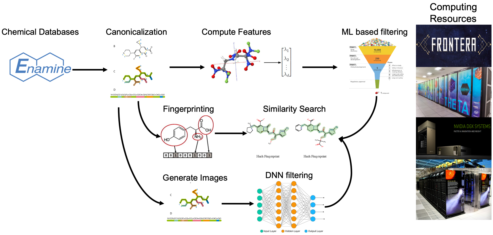

The Constellation Data Repository
A Data Repository to Share AI- and HPC-enabled Generated for SARS-CoV-2 Drugs
This repository is for sharing data used and models produced to generate leads for potential SARS-CoV-2 drugs. These data will be updated regularly as the collaboration produces new results. Shared data are located on the ALCF Petrel data store (here), from where they can be retrieved via Globus (request access here)
Table of contents
Data Processing Pipeline
The data processing pipeline is used to compute different types of features and representations of billions of small molecules. The pipeline first converts the SMILES representation for each molecule to the canonical SMILES form and removes duplicates. It then creates three different types of features: 1) molecular descriptors (using Mordred); 2) molecular fingerprints that encode the structure of molecules; and 3) 2D images of the molecular structure. These features are used as input to various machine learning and deep learning models that predict important characteristics including docking scores, toxicity, and more.

Data Summary Table
| Key | Full name | # Molecules | Details |
|---|---|---|---|
| BDB | BindingDB | TBD | TBD |
| CAS | CAS COVID-19 Antiviral Candidate Compounds | TBD | Link |
| DCL | DrugCentral | TBD | TBD |
| DBK | Drugbank | 9,679 | TBD |
| DUD | DUDE database of useful decoys | 101,337 | Link |
| E15 | 15.5M-molecule subset of ENA | TBD | TBD |
| EDB | Enamine REAL subset | TBD | TBD |
| EMO | eMolecules | 22,318,616 | TBD |
| ENA | Enamine REAL | TBD | TBD |
| FFI | Cure | TBD | TBD |
| G13 | GDB-13 | 977,468,301 | TBD |
| G17 | GDB-17 | 50,000,000 | TBD |
| HOP | Harvard Organic Photovoltaic Dataset | 350 | Link |
| L1K | L1000 | 10,148 | TBD |
| MOS | Moses | 1,936,963 | TBD |
| PCH | PubChem | 97,584,282 | TBD |
| QM9 | QM9 | 133,885 | TBD |
| REP | REP | 10,148 | TBD |
| SAV | Synthetically Accessible Virtual Inventory (SAVI) | 283,194,319 | Link |
| SUR | SureChEML | 291,525,153 | Link |
| ZIN | ZINC15 | 1,475,876,222 | TBD |
Notes:
- The numbers above need to be validated. Note that they may be less than what can be found at the source.
- These numbers do not account for de-duplication, within or between datasets.
- We may want to look at MoleculeNet
| Key | Canonical SMILES | Fingerprints | Descriptors | Images |
|---|---|---|---|---|
| E15 | Link | Link | Link | |
| G13 | Link | Link | Link | |
| G17 | Link | Link | Link | |
| HOP | Link | Link | Link | |
| L1K | Link | Link | Link | |
| MOS | Link | Link | Link | |
| PCH | Link | Link | Link | |
| QM9 | Link | Link | Link | |
| REP | Link | Link | Link | |
| SAV | Link | Link | Link | |
| SUR | Link | Link | Link | |
| ZIN | Link | Link | Link |
Methodology
Converting SMILES Canonical Form
Generating Fingerprints
Calculating Descriptors
Contributing
Acknowledgements
Data storage and computational support for this research project has been generously supported by the following resources.
Petrel Data Service at the Argonne Leadership Computing Facility (ALCF)
This research used resources of the Argonne Leadership Computing Facility, which is a DOE Office of Science User Facility supported under Contract DE-AC02-06CH11357. Petrel
Theta at the Argonne Leadership Computing Facility (ALCF)
This research used resources of the Argonne Leadership Computing Facility, which is a DOE Office of Science User Facility supported under Contract DE-AC02-06CH11357. ALCF